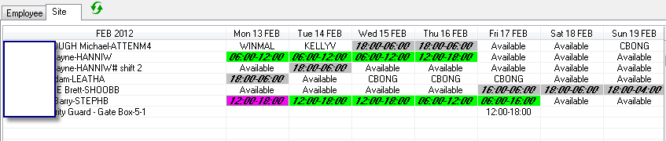

Home > Tutorials

Tutorial
Introduction

Explanation
The scheduling workbench display (above) is showing that these shifts are all confirmed (bold & italicised).
To answer the question requires an understanding of what stage you are at in relation to processing.
Select the shift which is incorrect, & double-click it to see the edit window. If the shift has been processed in payroll or invoicing or both, you will be informed of the fact through a message, & also what is further possible.
So, to cover off all scenarios:
The shift is confirmed only - which signifies that it's ok to process payroll & invoicing. If neither of these processes have been run, simply change the shift details as required (i.e. the employee, or start/finish times).
If the shift has been run either against payroll and / or invoicing, and the process itself (payroll and / or invoicing) is not yet committed:
- Un-commit or cancel either the payroll and / or billing run.
- Make the necessary correction to the shift
- Re-process the payroll and / or billing run.
If the shift has been run against payroll and/or invoicing, and you have 'sent' the pay to the bank and/or invoice to the customer, then you need to follow your own business procedures as to how to handle the reversal.
- With invoicing you may issue a credit note to the customer, so that figures balance in Powerforce.
- With payroll, you may enter manual adjustments which you may process immediately or wait until the next payrun to process.
Changing Shift Details
To change the time of a shift:
Double-click the shift to open the edit window.
Change either the post start or post finish time. Note: Do not change the book times, as they need to remain true so that any reporting correctly represents the truth of actions against the shift.
To change the employee of a shift:
- Select the shift (click once on the shift)
- Click the replace button, and select a replacement employee
- Save the changes.
To change more than one shift to a different employee
- Select the employee name against the row whose shift details are incorrect.
- Press the replace button, & select the replacement employee
- You may now replace multiple shifts to the new employee selected.
Top of Page
See Also
 PowerForce Controls PowerForce Controls
|